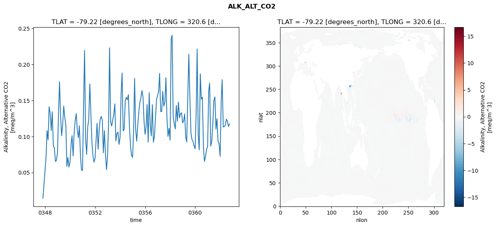
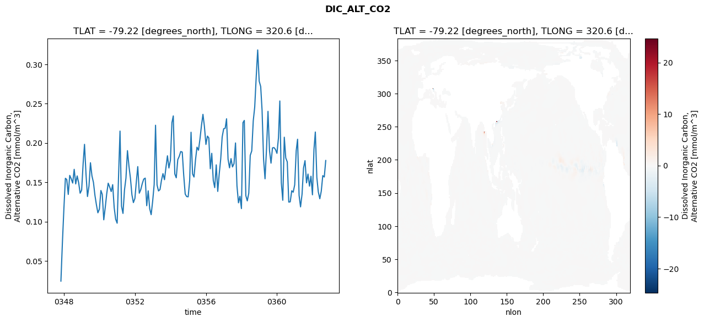
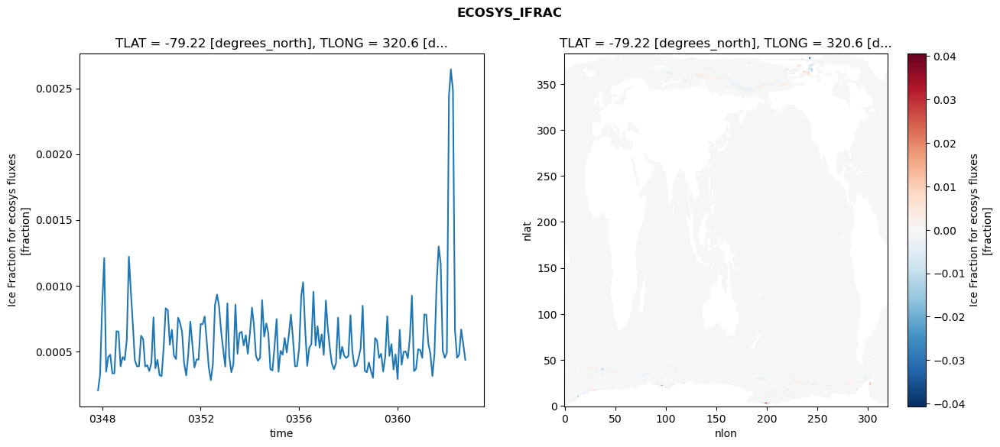
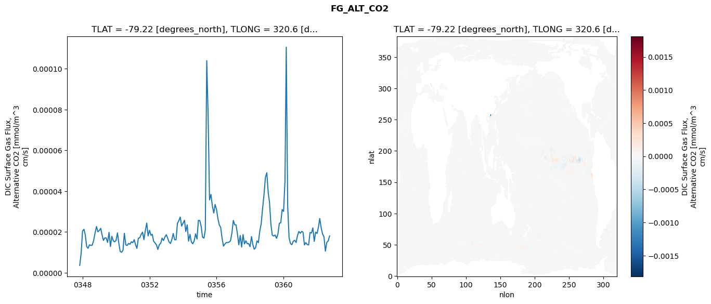

glb-dor_North_Atlantic_basin_041_1999-10-01_00167#
Simulation details#
Case: smyle.cdr-atlas-v0.glb-dor_North_Atlantic_basin_041_1999-10-01_00167.001
Basin: North_Atlantic_basin
Polygon: 41.0
Start date: 1999-10
Show code cell source Hide code cell source
import xarray as xr
import matplotlib.pyplot as plt
Show code cell source Hide code cell source
zarr_store = "/path/to/zarr/store"
# Parameters
zarr_store = "/global/cfs/projectdirs/m4746/Projects/Ocean-CDR-Atlas-v0/data/validation/smyle.cdr-atlas-v0.glb-dor_North_Atlantic_basin_041_1999-10-01_00167.001.validation.zarr"
Show code cell source Hide code cell source
%%time
ds_o = xr.open_zarr(zarr_store).compute()
ds_o
CPU times: user 588 ms, sys: 442 ms, total: 1.03 s
Wall time: 1.29 s
<xarray.Dataset> Size: 2MB
Dimensions: (nlat: 384, nlon: 320, time: 180)
Coordinates:
TLAT float64 8B -79.22
TLONG float64 8B 320.6
ULAT float64 8B -78.95
ULONG float64 8B 321.1
* time (time) object 1kB 0347-11-01 00:00:00 ... 0362-10-01 0...
z_t float32 4B 500.0
Dimensions without coordinates: nlat, nlon
Data variables:
ALK_ALT_CO2_diff (nlat, nlon) float32 492kB nan nan nan ... nan nan nan
ALK_ALT_CO2_rmse (time) float64 1kB 0.01441 0.03243 ... 0.114 0.1176
DIC_ALT_CO2_diff (nlat, nlon) float32 492kB nan nan nan ... nan nan nan
DIC_ALT_CO2_rmse (time) float64 1kB 0.02426 0.07223 ... 0.1567 0.1776
ECOSYS_IFRAC_diff (nlat, nlon) float32 492kB nan nan nan ... nan nan nan
ECOSYS_IFRAC_rmse (time) float64 1kB 0.0002042 0.0003213 ... 0.0004352
FG_ALT_CO2_diff (nlat, nlon) float32 492kB nan nan nan ... nan nan nan
FG_ALT_CO2_rmse (time) float64 1kB 3.641e-06 9.422e-06 ... 1.805e-05xarray.Dataset
- nlat: 384
- nlon: 320
- time: 180
- TLAT()float64-79.22
- long_name :
- array of t-grid latitudes
- units :
- degrees_north
array(-79.22052261)
- TLONG()float64320.6
- long_name :
- array of t-grid longitudes
- units :
- degrees_east
array(320.56250892)
- ULAT()float64-78.95
- long_name :
- array of u-grid latitudes
- units :
- degrees_north
array(-78.95289509)
- ULONG()float64321.1
- long_name :
- array of u-grid longitudes
- units :
- degrees_east
array(321.12500894)
- time(time)object0347-11-01 00:00:00 ... 0362-10-...
- bounds :
- time_bound
- long_name :
- time
array([cftime.DatetimeNoLeap(347, 11, 1, 0, 0, 0, 0, has_year_zero=True), cftime.DatetimeNoLeap(347, 12, 1, 0, 0, 0, 0, has_year_zero=True), cftime.DatetimeNoLeap(348, 1, 1, 0, 0, 0, 0, has_year_zero=True), cftime.DatetimeNoLeap(348, 2, 1, 0, 0, 0, 0, has_year_zero=True), cftime.DatetimeNoLeap(348, 3, 1, 0, 0, 0, 0, has_year_zero=True), cftime.DatetimeNoLeap(348, 4, 1, 0, 0, 0, 0, has_year_zero=True), cftime.DatetimeNoLeap(348, 5, 1, 0, 0, 0, 0, has_year_zero=True), cftime.DatetimeNoLeap(348, 6, 1, 0, 0, 0, 0, has_year_zero=True), cftime.DatetimeNoLeap(348, 7, 1, 0, 0, 0, 0, has_year_zero=True), cftime.DatetimeNoLeap(348, 8, 1, 0, 0, 0, 0, has_year_zero=True), cftime.DatetimeNoLeap(348, 9, 1, 0, 0, 0, 0, has_year_zero=True), cftime.DatetimeNoLeap(348, 10, 1, 0, 0, 0, 0, has_year_zero=True), cftime.DatetimeNoLeap(348, 11, 1, 0, 0, 0, 0, has_year_zero=True), cftime.DatetimeNoLeap(348, 12, 1, 0, 0, 0, 0, has_year_zero=True), cftime.DatetimeNoLeap(349, 1, 1, 0, 0, 0, 0, has_year_zero=True), cftime.DatetimeNoLeap(349, 2, 1, 0, 0, 0, 0, has_year_zero=True), cftime.DatetimeNoLeap(349, 3, 1, 0, 0, 0, 0, has_year_zero=True), cftime.DatetimeNoLeap(349, 4, 1, 0, 0, 0, 0, has_year_zero=True), cftime.DatetimeNoLeap(349, 5, 1, 0, 0, 0, 0, has_year_zero=True), cftime.DatetimeNoLeap(349, 6, 1, 0, 0, 0, 0, has_year_zero=True), cftime.DatetimeNoLeap(349, 7, 1, 0, 0, 0, 0, has_year_zero=True), cftime.DatetimeNoLeap(349, 8, 1, 0, 0, 0, 0, has_year_zero=True), cftime.DatetimeNoLeap(349, 9, 1, 0, 0, 0, 0, has_year_zero=True), cftime.DatetimeNoLeap(349, 10, 1, 0, 0, 0, 0, has_year_zero=True), cftime.DatetimeNoLeap(349, 11, 1, 0, 0, 0, 0, has_year_zero=True), cftime.DatetimeNoLeap(349, 12, 1, 0, 0, 0, 0, has_year_zero=True), cftime.DatetimeNoLeap(350, 1, 1, 0, 0, 0, 0, has_year_zero=True), cftime.DatetimeNoLeap(350, 2, 1, 0, 0, 0, 0, has_year_zero=True), cftime.DatetimeNoLeap(350, 3, 1, 0, 0, 0, 0, has_year_zero=True), cftime.DatetimeNoLeap(350, 4, 1, 0, 0, 0, 0, has_year_zero=True), cftime.DatetimeNoLeap(350, 5, 1, 0, 0, 0, 0, has_year_zero=True), cftime.DatetimeNoLeap(350, 6, 1, 0, 0, 0, 0, has_year_zero=True), cftime.DatetimeNoLeap(350, 7, 1, 0, 0, 0, 0, has_year_zero=True), cftime.DatetimeNoLeap(350, 8, 1, 0, 0, 0, 0, has_year_zero=True), cftime.DatetimeNoLeap(350, 9, 1, 0, 0, 0, 0, has_year_zero=True), cftime.DatetimeNoLeap(350, 10, 1, 0, 0, 0, 0, has_year_zero=True), cftime.DatetimeNoLeap(350, 11, 1, 0, 0, 0, 0, has_year_zero=True), cftime.DatetimeNoLeap(350, 12, 1, 0, 0, 0, 0, has_year_zero=True), cftime.DatetimeNoLeap(351, 1, 1, 0, 0, 0, 0, has_year_zero=True), cftime.DatetimeNoLeap(351, 2, 1, 0, 0, 0, 0, has_year_zero=True), cftime.DatetimeNoLeap(351, 3, 1, 0, 0, 0, 0, has_year_zero=True), cftime.DatetimeNoLeap(351, 4, 1, 0, 0, 0, 0, has_year_zero=True), cftime.DatetimeNoLeap(351, 5, 1, 0, 0, 0, 0, has_year_zero=True), cftime.DatetimeNoLeap(351, 6, 1, 0, 0, 0, 0, has_year_zero=True), cftime.DatetimeNoLeap(351, 7, 1, 0, 0, 0, 0, has_year_zero=True), cftime.DatetimeNoLeap(351, 8, 1, 0, 0, 0, 0, has_year_zero=True), cftime.DatetimeNoLeap(351, 9, 1, 0, 0, 0, 0, has_year_zero=True), cftime.DatetimeNoLeap(351, 10, 1, 0, 0, 0, 0, has_year_zero=True), cftime.DatetimeNoLeap(351, 11, 1, 0, 0, 0, 0, has_year_zero=True), cftime.DatetimeNoLeap(351, 12, 1, 0, 0, 0, 0, has_year_zero=True), cftime.DatetimeNoLeap(352, 1, 1, 0, 0, 0, 0, has_year_zero=True), cftime.DatetimeNoLeap(352, 2, 1, 0, 0, 0, 0, has_year_zero=True), cftime.DatetimeNoLeap(352, 3, 1, 0, 0, 0, 0, has_year_zero=True), cftime.DatetimeNoLeap(352, 4, 1, 0, 0, 0, 0, has_year_zero=True), cftime.DatetimeNoLeap(352, 5, 1, 0, 0, 0, 0, has_year_zero=True), cftime.DatetimeNoLeap(352, 6, 1, 0, 0, 0, 0, has_year_zero=True), cftime.DatetimeNoLeap(352, 7, 1, 0, 0, 0, 0, has_year_zero=True), cftime.DatetimeNoLeap(352, 8, 1, 0, 0, 0, 0, has_year_zero=True), cftime.DatetimeNoLeap(352, 9, 1, 0, 0, 0, 0, has_year_zero=True), cftime.DatetimeNoLeap(352, 10, 1, 0, 0, 0, 0, has_year_zero=True), cftime.DatetimeNoLeap(352, 11, 1, 0, 0, 0, 0, has_year_zero=True), cftime.DatetimeNoLeap(352, 12, 1, 0, 0, 0, 0, has_year_zero=True), cftime.DatetimeNoLeap(353, 1, 1, 0, 0, 0, 0, has_year_zero=True), cftime.DatetimeNoLeap(353, 2, 1, 0, 0, 0, 0, has_year_zero=True), cftime.DatetimeNoLeap(353, 3, 1, 0, 0, 0, 0, has_year_zero=True), cftime.DatetimeNoLeap(353, 4, 1, 0, 0, 0, 0, has_year_zero=True), cftime.DatetimeNoLeap(353, 5, 1, 0, 0, 0, 0, has_year_zero=True), cftime.DatetimeNoLeap(353, 6, 1, 0, 0, 0, 0, has_year_zero=True), cftime.DatetimeNoLeap(353, 7, 1, 0, 0, 0, 0, has_year_zero=True), cftime.DatetimeNoLeap(353, 8, 1, 0, 0, 0, 0, has_year_zero=True), cftime.DatetimeNoLeap(353, 9, 1, 0, 0, 0, 0, has_year_zero=True), cftime.DatetimeNoLeap(353, 10, 1, 0, 0, 0, 0, has_year_zero=True), cftime.DatetimeNoLeap(353, 11, 1, 0, 0, 0, 0, has_year_zero=True), cftime.DatetimeNoLeap(353, 12, 1, 0, 0, 0, 0, has_year_zero=True), cftime.DatetimeNoLeap(354, 1, 1, 0, 0, 0, 0, has_year_zero=True), cftime.DatetimeNoLeap(354, 2, 1, 0, 0, 0, 0, has_year_zero=True), cftime.DatetimeNoLeap(354, 3, 1, 0, 0, 0, 0, has_year_zero=True), cftime.DatetimeNoLeap(354, 4, 1, 0, 0, 0, 0, has_year_zero=True), cftime.DatetimeNoLeap(354, 5, 1, 0, 0, 0, 0, has_year_zero=True), cftime.DatetimeNoLeap(354, 6, 1, 0, 0, 0, 0, has_year_zero=True), cftime.DatetimeNoLeap(354, 7, 1, 0, 0, 0, 0, has_year_zero=True), cftime.DatetimeNoLeap(354, 8, 1, 0, 0, 0, 0, has_year_zero=True), cftime.DatetimeNoLeap(354, 9, 1, 0, 0, 0, 0, has_year_zero=True), cftime.DatetimeNoLeap(354, 10, 1, 0, 0, 0, 0, has_year_zero=True), cftime.DatetimeNoLeap(354, 11, 1, 0, 0, 0, 0, has_year_zero=True), cftime.DatetimeNoLeap(354, 12, 1, 0, 0, 0, 0, has_year_zero=True), cftime.DatetimeNoLeap(355, 1, 1, 0, 0, 0, 0, has_year_zero=True), cftime.DatetimeNoLeap(355, 2, 1, 0, 0, 0, 0, has_year_zero=True), cftime.DatetimeNoLeap(355, 3, 1, 0, 0, 0, 0, has_year_zero=True), cftime.DatetimeNoLeap(355, 4, 1, 0, 0, 0, 0, has_year_zero=True), cftime.DatetimeNoLeap(355, 5, 1, 0, 0, 0, 0, has_year_zero=True), cftime.DatetimeNoLeap(355, 6, 1, 0, 0, 0, 0, has_year_zero=True), cftime.DatetimeNoLeap(355, 7, 1, 0, 0, 0, 0, has_year_zero=True), cftime.DatetimeNoLeap(355, 8, 1, 0, 0, 0, 0, has_year_zero=True), cftime.DatetimeNoLeap(355, 9, 1, 0, 0, 0, 0, has_year_zero=True), cftime.DatetimeNoLeap(355, 10, 1, 0, 0, 0, 0, has_year_zero=True), cftime.DatetimeNoLeap(355, 11, 1, 0, 0, 0, 0, has_year_zero=True), cftime.DatetimeNoLeap(355, 12, 1, 0, 0, 0, 0, has_year_zero=True), cftime.DatetimeNoLeap(356, 1, 1, 0, 0, 0, 0, has_year_zero=True), cftime.DatetimeNoLeap(356, 2, 1, 0, 0, 0, 0, has_year_zero=True), cftime.DatetimeNoLeap(356, 3, 1, 0, 0, 0, 0, has_year_zero=True), cftime.DatetimeNoLeap(356, 4, 1, 0, 0, 0, 0, has_year_zero=True), cftime.DatetimeNoLeap(356, 5, 1, 0, 0, 0, 0, has_year_zero=True), cftime.DatetimeNoLeap(356, 6, 1, 0, 0, 0, 0, has_year_zero=True), cftime.DatetimeNoLeap(356, 7, 1, 0, 0, 0, 0, has_year_zero=True), cftime.DatetimeNoLeap(356, 8, 1, 0, 0, 0, 0, has_year_zero=True), cftime.DatetimeNoLeap(356, 9, 1, 0, 0, 0, 0, has_year_zero=True), cftime.DatetimeNoLeap(356, 10, 1, 0, 0, 0, 0, has_year_zero=True), cftime.DatetimeNoLeap(356, 11, 1, 0, 0, 0, 0, has_year_zero=True), cftime.DatetimeNoLeap(356, 12, 1, 0, 0, 0, 0, has_year_zero=True), cftime.DatetimeNoLeap(357, 1, 1, 0, 0, 0, 0, has_year_zero=True), cftime.DatetimeNoLeap(357, 2, 1, 0, 0, 0, 0, has_year_zero=True), cftime.DatetimeNoLeap(357, 3, 1, 0, 0, 0, 0, has_year_zero=True), cftime.DatetimeNoLeap(357, 4, 1, 0, 0, 0, 0, has_year_zero=True), cftime.DatetimeNoLeap(357, 5, 1, 0, 0, 0, 0, has_year_zero=True), cftime.DatetimeNoLeap(357, 6, 1, 0, 0, 0, 0, has_year_zero=True), cftime.DatetimeNoLeap(357, 7, 1, 0, 0, 0, 0, has_year_zero=True), cftime.DatetimeNoLeap(357, 8, 1, 0, 0, 0, 0, has_year_zero=True), cftime.DatetimeNoLeap(357, 9, 1, 0, 0, 0, 0, has_year_zero=True), cftime.DatetimeNoLeap(357, 10, 1, 0, 0, 0, 0, has_year_zero=True), cftime.DatetimeNoLeap(357, 11, 1, 0, 0, 0, 0, has_year_zero=True), cftime.DatetimeNoLeap(357, 12, 1, 0, 0, 0, 0, has_year_zero=True), cftime.DatetimeNoLeap(358, 1, 1, 0, 0, 0, 0, has_year_zero=True), cftime.DatetimeNoLeap(358, 2, 1, 0, 0, 0, 0, has_year_zero=True), cftime.DatetimeNoLeap(358, 3, 1, 0, 0, 0, 0, has_year_zero=True), cftime.DatetimeNoLeap(358, 4, 1, 0, 0, 0, 0, has_year_zero=True), cftime.DatetimeNoLeap(358, 5, 1, 0, 0, 0, 0, has_year_zero=True), cftime.DatetimeNoLeap(358, 6, 1, 0, 0, 0, 0, has_year_zero=True), cftime.DatetimeNoLeap(358, 7, 1, 0, 0, 0, 0, has_year_zero=True), cftime.DatetimeNoLeap(358, 8, 1, 0, 0, 0, 0, has_year_zero=True), cftime.DatetimeNoLeap(358, 9, 1, 0, 0, 0, 0, has_year_zero=True), cftime.DatetimeNoLeap(358, 10, 1, 0, 0, 0, 0, has_year_zero=True), cftime.DatetimeNoLeap(358, 11, 1, 0, 0, 0, 0, has_year_zero=True), cftime.DatetimeNoLeap(358, 12, 1, 0, 0, 0, 0, has_year_zero=True), cftime.DatetimeNoLeap(359, 1, 1, 0, 0, 0, 0, has_year_zero=True), cftime.DatetimeNoLeap(359, 2, 1, 0, 0, 0, 0, has_year_zero=True), cftime.DatetimeNoLeap(359, 3, 1, 0, 0, 0, 0, has_year_zero=True), cftime.DatetimeNoLeap(359, 4, 1, 0, 0, 0, 0, has_year_zero=True), cftime.DatetimeNoLeap(359, 5, 1, 0, 0, 0, 0, has_year_zero=True), cftime.DatetimeNoLeap(359, 6, 1, 0, 0, 0, 0, has_year_zero=True), cftime.DatetimeNoLeap(359, 7, 1, 0, 0, 0, 0, has_year_zero=True), cftime.DatetimeNoLeap(359, 8, 1, 0, 0, 0, 0, has_year_zero=True), cftime.DatetimeNoLeap(359, 9, 1, 0, 0, 0, 0, has_year_zero=True), cftime.DatetimeNoLeap(359, 10, 1, 0, 0, 0, 0, has_year_zero=True), cftime.DatetimeNoLeap(359, 11, 1, 0, 0, 0, 0, has_year_zero=True), cftime.DatetimeNoLeap(359, 12, 1, 0, 0, 0, 0, has_year_zero=True), cftime.DatetimeNoLeap(360, 1, 1, 0, 0, 0, 0, has_year_zero=True), cftime.DatetimeNoLeap(360, 2, 1, 0, 0, 0, 0, has_year_zero=True), cftime.DatetimeNoLeap(360, 3, 1, 0, 0, 0, 0, has_year_zero=True), cftime.DatetimeNoLeap(360, 4, 1, 0, 0, 0, 0, has_year_zero=True), cftime.DatetimeNoLeap(360, 5, 1, 0, 0, 0, 0, has_year_zero=True), cftime.DatetimeNoLeap(360, 6, 1, 0, 0, 0, 0, has_year_zero=True), cftime.DatetimeNoLeap(360, 7, 1, 0, 0, 0, 0, has_year_zero=True), cftime.DatetimeNoLeap(360, 8, 1, 0, 0, 0, 0, has_year_zero=True), cftime.DatetimeNoLeap(360, 9, 1, 0, 0, 0, 0, has_year_zero=True), cftime.DatetimeNoLeap(360, 10, 1, 0, 0, 0, 0, has_year_zero=True), cftime.DatetimeNoLeap(360, 11, 1, 0, 0, 0, 0, has_year_zero=True), cftime.DatetimeNoLeap(360, 12, 1, 0, 0, 0, 0, has_year_zero=True), cftime.DatetimeNoLeap(361, 1, 1, 0, 0, 0, 0, has_year_zero=True), cftime.DatetimeNoLeap(361, 2, 1, 0, 0, 0, 0, has_year_zero=True), cftime.DatetimeNoLeap(361, 3, 1, 0, 0, 0, 0, has_year_zero=True), cftime.DatetimeNoLeap(361, 4, 1, 0, 0, 0, 0, has_year_zero=True), cftime.DatetimeNoLeap(361, 5, 1, 0, 0, 0, 0, has_year_zero=True), cftime.DatetimeNoLeap(361, 6, 1, 0, 0, 0, 0, has_year_zero=True), cftime.DatetimeNoLeap(361, 7, 1, 0, 0, 0, 0, has_year_zero=True), cftime.DatetimeNoLeap(361, 8, 1, 0, 0, 0, 0, has_year_zero=True), cftime.DatetimeNoLeap(361, 9, 1, 0, 0, 0, 0, has_year_zero=True), cftime.DatetimeNoLeap(361, 10, 1, 0, 0, 0, 0, has_year_zero=True), cftime.DatetimeNoLeap(361, 11, 1, 0, 0, 0, 0, has_year_zero=True), cftime.DatetimeNoLeap(361, 12, 1, 0, 0, 0, 0, has_year_zero=True), cftime.DatetimeNoLeap(362, 1, 1, 0, 0, 0, 0, has_year_zero=True), cftime.DatetimeNoLeap(362, 2, 1, 0, 0, 0, 0, has_year_zero=True), cftime.DatetimeNoLeap(362, 3, 1, 0, 0, 0, 0, has_year_zero=True), cftime.DatetimeNoLeap(362, 4, 1, 0, 0, 0, 0, has_year_zero=True), cftime.DatetimeNoLeap(362, 5, 1, 0, 0, 0, 0, has_year_zero=True), cftime.DatetimeNoLeap(362, 6, 1, 0, 0, 0, 0, has_year_zero=True), cftime.DatetimeNoLeap(362, 7, 1, 0, 0, 0, 0, has_year_zero=True), cftime.DatetimeNoLeap(362, 8, 1, 0, 0, 0, 0, has_year_zero=True), cftime.DatetimeNoLeap(362, 9, 1, 0, 0, 0, 0, has_year_zero=True), cftime.DatetimeNoLeap(362, 10, 1, 0, 0, 0, 0, has_year_zero=True)], dtype=object) - z_t()float32500.0
- long_name :
- depth from surface to midpoint of layer
- positive :
- down
- units :
- centimeters
- valid_max :
- 537500.0
- valid_min :
- 500.0
array(500., dtype=float32)
- ALK_ALT_CO2_diff(nlat, nlon)float32nan nan nan nan ... nan nan nan nan
- cell_methods :
- time: mean
- grid_loc :
- 3111
- long_name :
- Alkalinity, Alternative CO2
- units :
- meq/m^3
array([[ nan, nan, nan, ..., nan, nan, nan], [ nan, nan, nan, ..., nan, nan, nan], [0.00830078, 0.00683594, 0.00512695, ..., nan, nan, nan], ..., [ nan, nan, nan, ..., nan, nan, nan], [ nan, nan, nan, ..., nan, nan, nan], [ nan, nan, nan, ..., nan, nan, nan]], dtype=float32) - ALK_ALT_CO2_rmse(time)float640.01441 0.03243 ... 0.114 0.1176
- cell_methods :
- time: mean
- grid_loc :
- 3111
- long_name :
- Alkalinity, Alternative CO2
- units :
- meq/m^3
array([0.01440883, 0.03243456, 0.05256662, 0.07218147, 0.1081104 , 0.09531373, 0.14129291, 0.13198125, 0.10822993, 0.13440761, 0.08661366, 0.08457665, 0.06531747, 0.06698394, 0.07801977, 0.13580269, 0.17604557, 0.12767554, 0.10103728, 0.11667453, 0.14234727, 0.12647124, 0.11580354, 0.05852926, 0.07078059, 0.05763452, 0.06450153, 0.08933171, 0.10125413, 0.07295955, 0.10450982, 0.1222502 , 0.1318674 , 0.10927219, 0.09820425, 0.11492652, 0.07375981, 0.05327597, 0.05309093, 0.14607553, 0.21942981, 0.09691865, 0.07518344, 0.11335913, 0.12343141, 0.1729373 , 0.13137839, 0.09280625, 0.07324423, 0.06447105, 0.06964675, 0.09566135, 0.11839583, 0.08232515, 0.10921026, 0.12457401, 0.1278699 , 0.12268463, 0.07739388, 0.10826779, 0.07575122, 0.05396125, 0.07292666, 0.12005424, 0.22308059, 0.12015637, 0.1147146 , 0.12316915, 0.13011709, 0.14542933, 0.09386454, 0.1041662 , 0.10613163, 0.08901428, 0.0987708 , 0.15987898, 0.18808554, 0.10788795, 0.1100114 , 0.14954015, 0.15420193, 0.15113729, 0.15812651, 0.11426523, 0.08729159, 0.07344913, 0.071222 , 0.10842712, 0.18071143, 0.10997438, 0.09339077, 0.11566532, 0.13332902, 0.14694638, 0.15345391, 0.16382609, 0.15519717, 0.12167524, 0.10307359, 0.11453941, 0.14434403, 0.09211682, 0.1607998 , 0.11501359, 0.10079406, 0.1441715 , 0.09212031, 0.10044976, 0.12678304, 0.15144716, 0.15683174, 0.16284558, 0.18761111, 0.13468401, 0.13455456, 0.16263296, 0.1422396 , 0.14737502, 0.18169299, 0.12497758, 0.10008427, 0.11142003, 0.09487389, 0.23530739, 0.24060738, 0.12681811, 0.11773547, 0.11051547, 0.14319896, 0.12125249, 0.14791341, 0.12601254, 0.13188274, 0.13302429, 0.11887538, 0.12195746, 0.13130509, 0.09937947, 0.09249087, 0.15577038, 0.21436351, 0.15434194, 0.10457927, 0.09589703, 0.09317836, 0.0869244 , 0.08287189, 0.13528308, 0.22139008, 0.10297781, 0.08146544, 0.18713281, 0.15192051, 0.15453816, 0.08504924, 0.06544563, 0.07250228, 0.08224755, 0.08641337, 0.16355491, 0.17422383, 0.08673559, 0.0924626 , 0.11662499, 0.15016129, 0.15491453, 0.1101875 , 0.12454131, 0.09314911, 0.09023699, 0.07245941, 0.14967329, 0.17887117, 0.11326489, 0.11378317, 0.11565145, 0.12402708, 0.12140138, 0.11395193, 0.1175858 ]) - DIC_ALT_CO2_diff(nlat, nlon)float32nan nan nan nan ... nan nan nan nan
- cell_methods :
- time: mean
- grid_loc :
- 3111
- long_name :
- Dissolved Inorganic Carbon, Alternative CO2
- units :
- mmol/m^3
array([[ nan, nan, nan, ..., nan, nan, nan], [ nan, nan, nan, ..., nan, nan, nan], [0.02319336, 0.02587891, 0.01904297, ..., nan, nan, nan], ..., [ nan, nan, nan, ..., nan, nan, nan], [ nan, nan, nan, ..., nan, nan, nan], [ nan, nan, nan, ..., nan, nan, nan]], dtype=float32) - DIC_ALT_CO2_rmse(time)float640.02426 0.07223 ... 0.1567 0.1776
- cell_methods :
- time: mean
- grid_loc :
- 3111
- long_name :
- Dissolved Inorganic Carbon, Alternative CO2
- units :
- mmol/m^3
array([0.02426012, 0.07222831, 0.11613721, 0.1550324 , 0.15342598, 0.13449528, 0.15871103, 0.1543372 , 0.14894823, 0.16641865, 0.14789852, 0.1580806 , 0.14921351, 0.1360606 , 0.13997552, 0.17402121, 0.19820408, 0.16002154, 0.131845 , 0.1450921 , 0.1748011 , 0.15804657, 0.14972503, 0.13353605, 0.121205 , 0.11114623, 0.11576227, 0.13951861, 0.13451615, 0.1022353 , 0.11781952, 0.13555212, 0.14881039, 0.14388467, 0.13818072, 0.14691764, 0.11789757, 0.10305653, 0.09792711, 0.16186072, 0.21505702, 0.11953218, 0.11037034, 0.14028089, 0.1553061 , 0.1902132 , 0.17020382, 0.15526178, 0.13398668, 0.12412448, 0.12943033, 0.15182611, 0.16989178, 0.13607852, 0.14046958, 0.14821495, 0.15394675, 0.15525252, 0.1201568 , 0.13908197, 0.11636456, 0.10877513, 0.12586759, 0.14711277, 0.22249795, 0.14661027, 0.13892926, 0.14070017, 0.15249714, 0.16098283, 0.15324119, 0.16869947, 0.18363865, 0.16814639, 0.17799818, 0.22585208, 0.23437501, 0.16053063, 0.15565656, 0.17872792, 0.18284069, 0.18909612, 0.18836081, 0.15923431, 0.1349842 , 0.13179564, 0.1314669 , 0.1523198 , 0.21359038, 0.16061248, 0.15662035, 0.178623 , 0.19459837, 0.19077561, 0.20520979, 0.22207284, 0.23634566, 0.22089275, 0.19810341, 0.20866378, 0.20641961, 0.16718656, 0.18680148, 0.15226191, 0.14316878, 0.17212179, 0.13834684, 0.16045235, 0.17956322, 0.20765709, 0.21804139, 0.2186791 , 0.23071636, 0.17932931, 0.16834488, 0.18002961, 0.16948768, 0.17367604, 0.19997061, 0.14552622, 0.12386083, 0.13215932, 0.11651662, 0.22575361, 0.22862175, 0.13309252, 0.12631159, 0.13612591, 0.18421113, 0.18985672, 0.22819107, 0.24564308, 0.28429812, 0.31827353, 0.27857087, 0.27162067, 0.2417125 , 0.17932496, 0.15439294, 0.19277586, 0.24020071, 0.19026076, 0.17429104, 0.1936944 , 0.19409198, 0.19178597, 0.18676814, 0.2064259 , 0.25337704, 0.14925838, 0.12709771, 0.20727651, 0.18094481, 0.17593105, 0.12475598, 0.12512491, 0.13918016, 0.13734027, 0.14675407, 0.19017846, 0.20470945, 0.13332389, 0.11871036, 0.1348053 , 0.16794905, 0.17747339, 0.14923856, 0.1604243 , 0.14507355, 0.15765075, 0.13402403, 0.19187211, 0.21387314, 0.15611005, 0.13779183, 0.12900916, 0.13862077, 0.15842517, 0.15667117, 0.17763461]) - ECOSYS_IFRAC_diff(nlat, nlon)float32nan nan nan nan ... nan nan nan nan
- cell_methods :
- time: mean
- grid_loc :
- 2110
- long_name :
- Ice Fraction for ecosys fluxes
- units :
- fraction
array([[ nan, nan, nan, ..., nan, nan, nan], [ nan, nan, nan, ..., nan, nan, nan], [-4.1723251e-07, 2.8014183e-06, 3.8743019e-06, ..., nan, nan, nan], ..., [ nan, nan, nan, ..., nan, nan, nan], [ nan, nan, nan, ..., nan, nan, nan], [ nan, nan, nan, ..., nan, nan, nan]], dtype=float32) - ECOSYS_IFRAC_rmse(time)float640.0002042 0.0003213 ... 0.0004352
- cell_methods :
- time: mean
- grid_loc :
- 2110
- long_name :
- Ice Fraction for ecosys fluxes
- units :
- fraction
array([0.00020424, 0.00032131, 0.00085023, 0.00120941, 0.00034549, 0.00045727, 0.00047461, 0.00033257, 0.0003331 , 0.00065303, 0.00065008, 0.00038599, 0.00045683, 0.00043462, 0.00059018, 0.0012197 , 0.00096848, 0.00070445, 0.00043285, 0.00038655, 0.00038606, 0.00061911, 0.00059107, 0.0003847 , 0.00039406, 0.00035064, 0.00041437, 0.00075917, 0.00037111, 0.00043556, 0.00031944, 0.00031122, 0.000523 , 0.00082776, 0.00081288, 0.00055042, 0.0006633 , 0.00046852, 0.00044091, 0.00075613, 0.00071774, 0.00064421, 0.00040875, 0.00031708, 0.00047497, 0.0007259 , 0.0005475 , 0.00037758, 0.00043789, 0.00043718, 0.00070747, 0.00070645, 0.00076473, 0.00057774, 0.00038093, 0.00028087, 0.00040205, 0.00085148, 0.00093208, 0.00084113, 0.00064809, 0.0005139 , 0.00038389, 0.00086487, 0.00046109, 0.00034107, 0.00040021, 0.00085576, 0.00048152, 0.00063872, 0.00064861, 0.00054451, 0.00062191, 0.00048173, 0.0006345 , 0.00083202, 0.00070231, 0.00046471, 0.000428 , 0.0004522 , 0.00088989, 0.00061194, 0.00071196, 0.00063873, 0.00036371, 0.00035489, 0.00053469, 0.00074559, 0.00034583, 0.00050354, 0.00047509, 0.00060169, 0.00049154, 0.00062331, 0.00077923, 0.00060063, 0.00038633, 0.00038778, 0.00052412, 0.00092208, 0.00102524, 0.00066087, 0.00038997, 0.00052987, 0.00055394, 0.00095251, 0.00054351, 0.00069065, 0.00052767, 0.00062918, 0.00047371, 0.00088665, 0.00067794, 0.0005256 , 0.00040671, 0.00036444, 0.00041003, 0.00075617, 0.00044533, 0.00053474, 0.0004658 , 0.0004494 , 0.00046537, 0.00077509, 0.00049644, 0.00038492, 0.00039326, 0.00045077, 0.00052142, 0.00084654, 0.00035236, 0.00034093, 0.00041483, 0.00035066, 0.00029921, 0.00060159, 0.00058123, 0.0004504 , 0.00048184, 0.00034737, 0.00045871, 0.00076621, 0.00046579, 0.00055576, 0.00036168, 0.00047632, 0.00028969, 0.00066321, 0.00039888, 0.0004976 , 0.00049808, 0.00044727, 0.00060562, 0.00092278, 0.00034917, 0.0003676 , 0.00051595, 0.00050968, 0.00045095, 0.00078029, 0.00077899, 0.00055943, 0.0004816 , 0.00031253, 0.00048108, 0.00100485, 0.001298 , 0.00116944, 0.00050448, 0.00045142, 0.00048983, 0.00244416, 0.00264421, 0.00248055, 0.00065726, 0.00045098, 0.00047377, 0.00066629, 0.00055317, 0.00043522]) - FG_ALT_CO2_diff(nlat, nlon)float32nan nan nan nan ... nan nan nan nan
- cell_methods :
- time: mean
- grid_loc :
- 2110
- long_name :
- DIC Surface Gas Flux, Alternative CO2
- units :
- mmol/m^3 cm/s
array([[ nan, nan, nan, ..., nan, nan, nan], [ nan, nan, nan, ..., nan, nan, nan], [-1.5541957e-08, -2.5446923e-08, -1.4799520e-08, ..., nan, nan, nan], ..., [ nan, nan, nan, ..., nan, nan, nan], [ nan, nan, nan, ..., nan, nan, nan], [ nan, nan, nan, ..., nan, nan, nan]], dtype=float32) - FG_ALT_CO2_rmse(time)float643.641e-06 9.422e-06 ... 1.805e-05
- cell_methods :
- time: mean
- grid_loc :
- 2110
- long_name :
- DIC Surface Gas Flux, Alternative CO2
- units :
- mmol/m^3 cm/s
array([3.64110618e-06, 9.42161802e-06, 2.04728329e-05, 2.13449777e-05, 1.87064665e-05, 1.28568166e-05, 1.20229662e-05, 1.37254915e-05, 1.34466392e-05, 1.35504006e-05, 1.59947630e-05, 1.95057221e-05, 2.26899466e-05, 2.01282946e-05, 2.07391380e-05, 2.17963175e-05, 1.87861370e-05, 1.58751899e-05, 1.71287443e-05, 1.71001853e-05, 1.48903678e-05, 1.98157951e-05, 1.28876609e-05, 1.79334502e-05, 1.57471005e-05, 1.51737406e-05, 1.59001265e-05, 1.95805731e-05, 1.47360431e-05, 1.04808089e-05, 1.00828353e-05, 1.10430132e-05, 1.93860495e-05, 1.36792886e-05, 1.34219315e-05, 1.43953622e-05, 1.40113359e-05, 1.52153725e-05, 1.47971058e-05, 1.62622323e-05, 1.38366080e-05, 1.19694579e-05, 1.68998606e-05, 1.71662388e-05, 1.87524188e-05, 1.99727139e-05, 1.63006961e-05, 2.07306498e-05, 2.43745554e-05, 1.81046759e-05, 2.08193227e-05, 1.84093380e-05, 1.88576744e-05, 1.54486047e-05, 1.46651182e-05, 1.37174830e-05, 1.14485556e-05, 1.37557857e-05, 1.44700863e-05, 1.69940813e-05, 1.58294805e-05, 1.75421261e-05, 1.86969884e-05, 1.69116149e-05, 1.51736955e-05, 1.43565040e-05, 1.62242039e-05, 1.92952904e-05, 1.62749125e-05, 1.61830782e-05, 2.43428055e-05, 2.55083058e-05, 2.73590238e-05, 2.29207449e-05, 2.42978378e-05, 2.57349388e-05, 2.02664657e-05, 2.34887906e-05, 1.55485551e-05, 1.88744753e-05, ... 2.34978336e-05, 2.22575353e-05, 1.69865279e-05, 1.30658922e-05, 1.40936377e-05, 1.48442550e-05, 1.48412535e-05, 1.50621225e-05, 1.57141161e-05, 1.94089096e-05, 2.56736987e-05, 2.35257161e-05, 2.35525723e-05, 1.90277231e-05, 1.37398508e-05, 1.83000082e-05, 1.26234597e-05, 1.87279641e-05, 1.41495462e-05, 1.57267127e-05, 1.42391442e-05, 1.43521833e-05, 1.28092614e-05, 1.77656981e-05, 1.39671656e-05, 1.15858477e-05, 1.22622113e-05, 1.56453523e-05, 1.47782420e-05, 2.04381820e-05, 2.41229202e-05, 3.14797067e-05, 3.82883943e-05, 4.67096001e-05, 4.90741807e-05, 3.91253258e-05, 3.45975103e-05, 2.34775384e-05, 1.84550434e-05, 1.80310678e-05, 1.85423061e-05, 1.69063580e-05, 1.91062113e-05, 2.43056547e-05, 2.45008580e-05, 3.09967494e-05, 3.00809984e-05, 4.48796302e-05, 1.10593905e-04, 3.26021402e-05, 1.72353609e-05, 1.43424400e-05, 1.37989182e-05, 1.54877374e-05, 1.59310595e-05, 1.48297309e-05, 1.83179256e-05, 2.02805443e-05, 1.93831684e-05, 2.03036207e-05, 1.99249808e-05, 1.36566222e-05, 1.47802834e-05, 1.38407189e-05, 1.36597771e-05, 1.97827283e-05, 1.94810163e-05, 2.20225750e-05, 1.54153501e-05, 1.99406305e-05, 1.93049131e-05, 2.24688594e-05, 2.66192367e-05, 2.19972472e-05, 1.90128842e-05, 1.76413187e-05, 1.06288914e-05, 1.48972646e-05, 1.56654975e-05, 1.80511918e-05])
- timePandasIndex
PandasIndex(CFTimeIndex([0347-11-01 00:00:00, 0347-12-01 00:00:00, 0348-01-01 00:00:00, 0348-02-01 00:00:00, 0348-03-01 00:00:00, 0348-04-01 00:00:00, 0348-05-01 00:00:00, 0348-06-01 00:00:00, 0348-07-01 00:00:00, 0348-08-01 00:00:00, ... 0362-01-01 00:00:00, 0362-02-01 00:00:00, 0362-03-01 00:00:00, 0362-04-01 00:00:00, 0362-05-01 00:00:00, 0362-06-01 00:00:00, 0362-07-01 00:00:00, 0362-08-01 00:00:00, 0362-09-01 00:00:00, 0362-10-01 00:00:00], dtype='object', length=180, calendar='noleap', freq='MS'))
Show code cell source Hide code cell source
variables = [v[:-5] for v in ds_o.variables if "_rmse" in v]
Show code cell source Hide code cell source
plt.rcParams.update({'figure.max_open_warning': 0})
for v in variables:
fig, axs = plt.subplots(1, 2, figsize=(15, 6))
ds_o[f"{v}_rmse"].plot(ax=axs[0])
ds_o[f"{v}_diff"].plot(ax=axs[1])
plt.suptitle(v, fontweight="bold")



